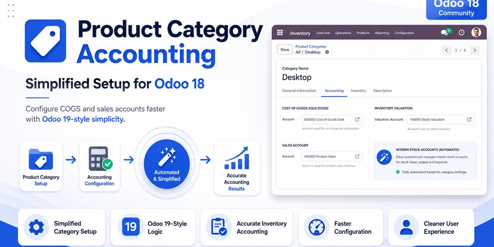

In Odoo 18 a Product Category exposes many technical stock-accounting fields: Inventory Valuation, Costing Method, Stock Journal, Stock Input / Output / Valuation accounts. Forgetting to configure them leads to incorrect stock valuation and broken accounting.
The user only selects Sales Account, Cost of Goods Sold and optionally a Costing Method. Everything else is configured automatically from a central per-company configuration. Odoo keeps creating the accounting entries — no duplicate engine.
odoo -d DB_NAME -i ff_simplified_inventory_accounting --stop-after-initThen configure under Settings → Invoicing → Simplified Inventory Accounting.
LGPL-3 — Flous Flow